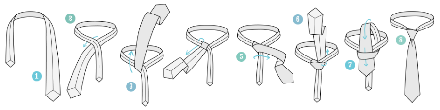
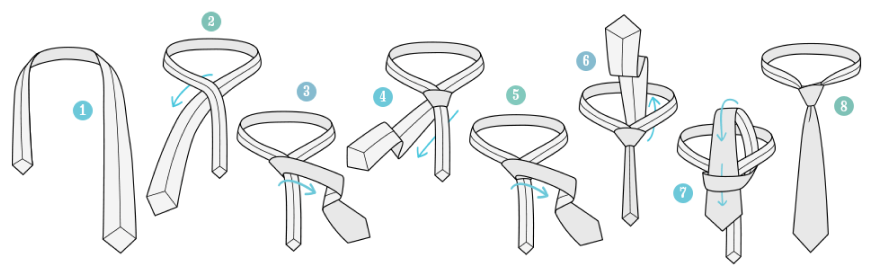
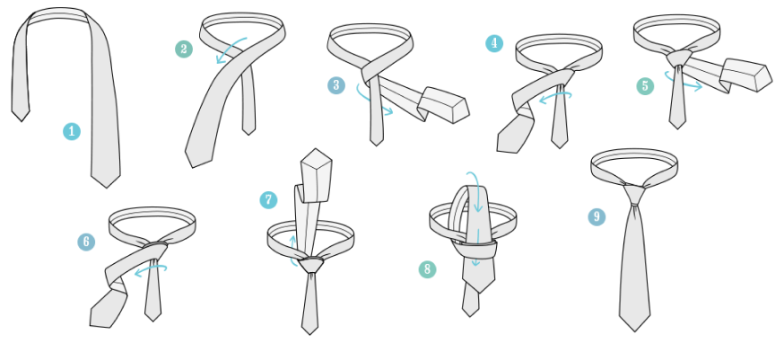

Как правильно завязывать галстук?
Даем наглядную инструкцию к семи самым популярным узлам
1. Four-in-hand
Самый простой (и по совместительству популярный) узел – Four-in-hand – научиться завязывать проще всего. Он подходит ко всем типам галстуков, рубашек и событий.

2. ”Виндзор”
Этот узел назван в честь герцога Виндзорского. У которого была любовь к крупному симметричному узлу, который отлично смотрится на статных мужчинах в рубашках с широким воротником.

3. “Полувиндзор”
Полувиндзорский узел завязать проще, чем полноценный «Виндзор». Он выглядит не так строго, как его старший брат и подходит для галстуков разного типа –
от совсем плотных шерстяных моделей до тонких шелковых.

4. “Пратт”
«Пратт» замыкает тройку самых распространенных сложных узлов. За изобретение узла стоит поблагодарить работника Торговой палаты США Джерри Пратта, а за его популяризацию – телеведущего Дона Шелби (иногда узел даже называют «Пратт–Шелби»).
Особенность: «Пратт» завязывается изнаночным методом – внешний шов скрывает воротник рубашки.

5. “Кельвин”
Аккуратный симметричный «Кельвин» подойдет не очень высоким мужчинам и будет хорошо смотреться с рубашками с маленьким воротником.

6. “Принц Альберт”
Вы, должно быть, уже догадались, что принц Альберт не изобретал узла, названного в его честь. Будучи вариацией узла «Виктория», «Принц Альберт» выглядит сдержанно и элегантно и отлично подходит для торжественных мероприятий.

7. “Ориентал”
«Ориентал» – почти такой же простой узел, как и Four-in-hand. Но несмотря на то, что завязать его проще простого, назвать его универсальным нельзя – распускается он так же легко, а значит, тонкие шелковые галстуки будут то и дело развязываться в течение дня. Зато для плотных фактурных моделей, например, из шерсти узел «Ориентал» отлично подойдет.
Проверьте как вы усвоили статью!